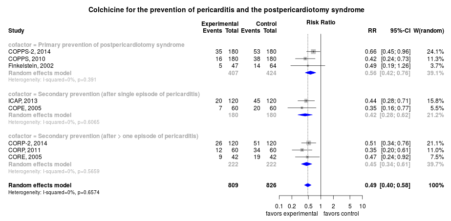

A living systematic review
Clinical summary:
This meta-analysis suggests that the clinical intervention is effective.
In patients similar to those in the included trials, approximately 33 among 100 benefit from the intervention (see GRADE Profile below). As compared to the review by Norrid below, this meta-analysis adds the CORP-2 trial and the trials of post-pericardiotomy patients since the results are very similar.
The quality of evidence is
Methods overview: Studies were abstacted into standardized tables of , and results. This repository updates a previously published meta-analysis.(1) Newer studies included are listed in the references. Rationale for newer trials excluded may be listed at the end of the references.
See methods for details.
Results: Details of the studies included are in the:
The forest plot for the primary outcome is below. Additional forest plots of secondary analyses may be available. 

{kind=link}
The
{kind=link}
References:
Systematic review(s)
Most recent review at time of last revision of this repository
- Alabed S, Cabello JB, Irving GJ, Qintar M, Burls A. Colchicine for pericarditis. Cochrane Database Syst Rev. 2014 Aug 28;8:CD010652. doi: 10.1002/14651858.CD010652.pub2. PMID: 25164988.
Randomized controlled trials
New trial(s) not included in the most recent review above
- Imazio M, Brucato A, Ferrazzi P, Pullara A, Adler Y, Barosi A, Caforio AL, Cemin R, Chirillo F, Comoglio C, Cugola D, Cumetti D, Dyrda O, Ferrua S, Finkelstein Y, Flocco R, Gandino A, Hoit B, Innocente F, Maestroni S, Musumeci F, Oh J, Pergolini A, Polizzi V, Ristic A, Simon C, Spodick DH, Tarzia V, Trimboli S, Valenti A, Belli R, Gaita F; for the COPPS-2 Investigators. Colchicine for Prevention of Postpericardiotomy Syndrome and Postoperative Atrial Fibrillation: The COPPS-2 Randomized Clinical Trial. JAMA. 2014. PMID: 25172965.
- Imazio M, Belli R, Brucato A, Cemin R, Ferrua S, Beqaraj F, Demarie D, Ferro S, Forno D, Maestroni S, Cumetti D, Varbella F, Trinchero R, Spodick DH, Adler Y. Efficacy and safety of colchicine for treatment of multiple recurrences of pericarditis (CORP-2): a multicentre, double-blind, placebo-controlled, randomised trial. Lancet. 2014 Mar 28. PMID: 24694983.
Trials undergoing review
- None
Trials excluded - selected list of important trials
- None.
Funding for this review
- None.
Cited by
This repository is cited by:
- WikiDoc contributors. Pericarditis treatment. WikiDoc. Nov 16, 2014. Available at: http://www.wikidoc.org/index.php/Pericarditis_treatment#Colchicine. Accessed November 16, 2014.
- Ters P, Badgett RG. A living meta-analysis of colchicine for pericarditis. Ann Pharmacother. 2014 Oct;48(10):1398-9. doi: 10.1177/1060028014544500. PMID: 25164526.